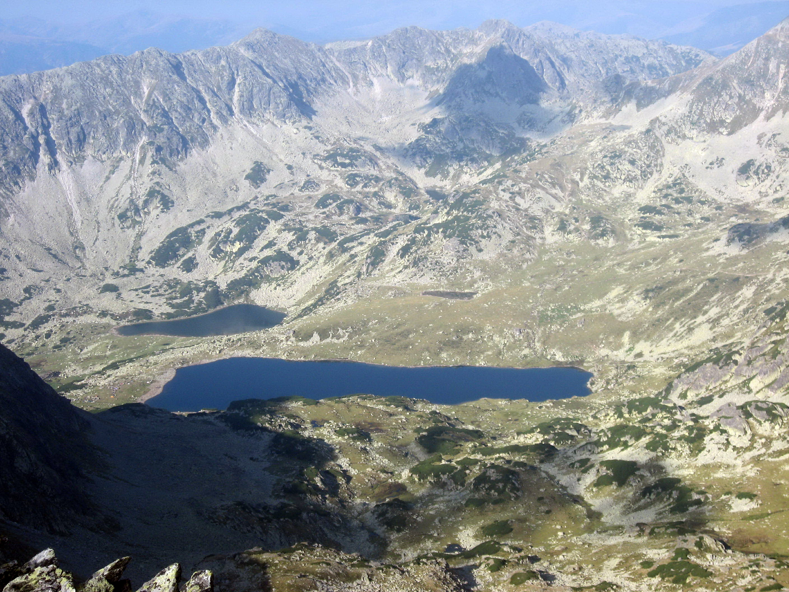
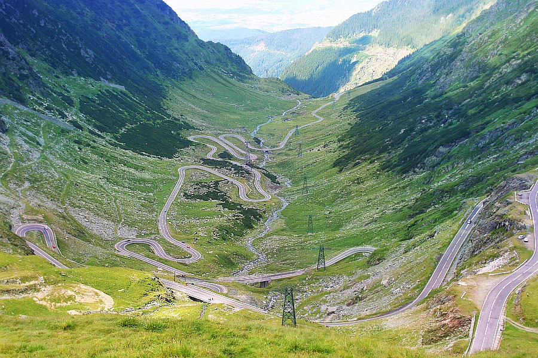
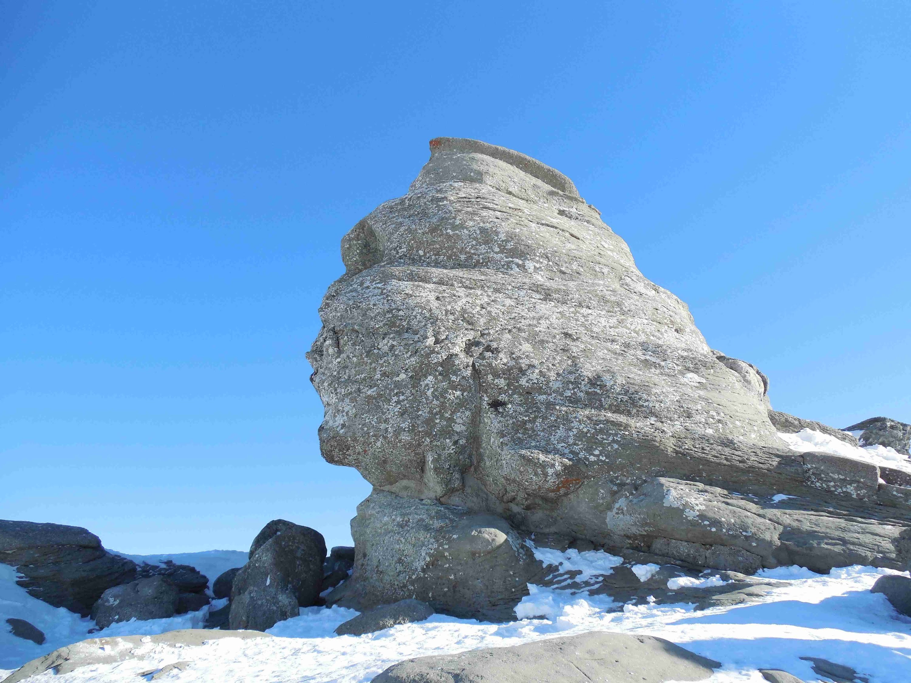

Muntii
Carpații românești fac parte din sectorul estic al sistemului muntos alpin, bine individualizat prin direcția generală a culmilor principale, prin altitudine, prin masivitate și structură. Rezistența Platformei Ruse le-a impus Carpaților la formare o direcție de la nord-nord-vest spre sud-sud-est, direcție modificată apoi spre vest de horstul hercinic dobrogean. Altitudinea medie a Carpaților este de circa 1000 m, înălțimile maxime depășind rar 2500 m (în Bucegi, Munții Făgărașului, Parângului, Retezatului). În Carpații Occidentali, înălțimile culmilor coboară frecvent sub 800 m (în Munții Codru-Moma, Pădurea Craiului, Banatului etc). Lățimea sistemului muntos carpatin pe teritoriul României variază între 120 km (în Munții Rodnei) și 70 km (în Munții Parângului). Carpații sunt caracterizați prin prezența unor numeroase depresiuni intramontane și văi transversale, totale sau parțiale (Dunărea, Jiul, Oltul, Râul Bistrița, Mureș, Crișul Repede, etc.) Ei au o vechime de 204 milioane ani.
  